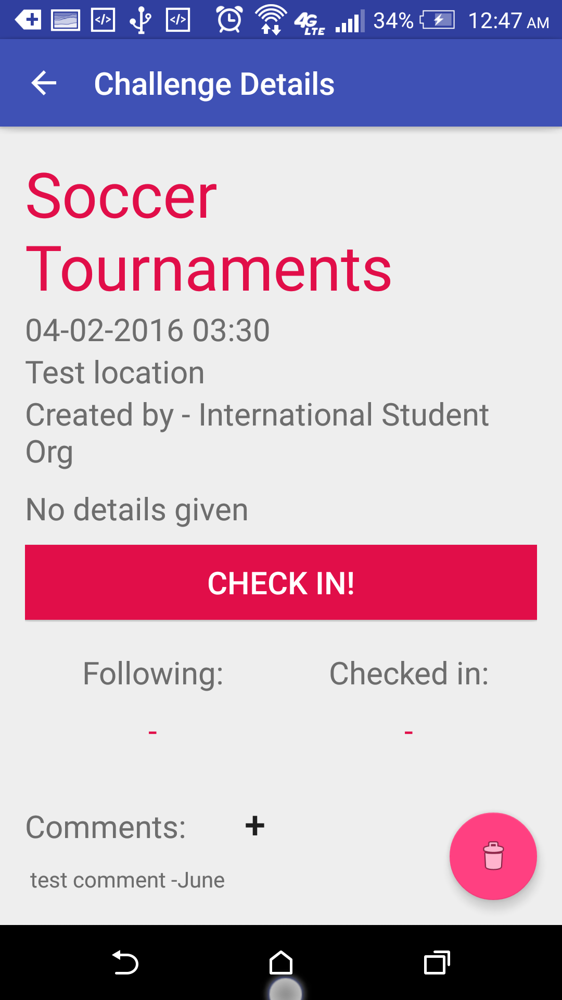

Most of these projects were started to keep me busy between classes and speed up my coding. These projects have been helpful in showing me ways to make my code more efficient and easier to work with.
UActive is a Student Event planner/game that will allow students at my university see and participate in events going on around campus. There are two types of users: organizational and student. Organizational users are allowed to create events on behalf of their organizations and keep a log of users that participate in their events. This should remove the need to have students sign in manually eliminate error from reading messy handwritting. Student users will be able to see, create, and check-in to activities that other users have created. They will earn points for for each activity that they participate in and will be able to see how active they are on campus. The app communicates with a server database that organizes and shows event and user data. This server is below.
This app started as a group project in my Intro to Software Engineering class. The demo version worked great for in-class presentation, but was eventually rewritten as it became very buggy during the transition to use an online database.

This server is an extension of the UActive project above and is built to work with it. It handles all requests from clients running the app. The server is divided into two components: server and database. The server is written in java does three things: receiving a request, processing a request, and sends a reply. The database component occurs during the processing step and is written in python. When called, the process will establish a connection with a sqlite3 database, execute commands and return either queries or statuses.
The sqlite3 database holds all user data, event data, organizational data, and links between them. I will be looking to create an archive to offload expired events from cluttering up the event list. Current commands available: create new user, user login, update user status, create event, retreive event, delete event, create an organization, add user to organization, check-in user to event, retreive history.
This android application's purpose is to show shuttle schedules, locations, and estimated time of arrival for many of the stops around campus.
I started it as a means to optimize my commute to the main campus from the student parking lots. Development has been stopped as I have not
found a reliable way to track a shuttle's location. Possible solutions would be: coordinating with the transportion office to determine arrival times
at each stop, a beacon at certain stops to act as a relay between the shuttle and the server, or manually determining arrival times for stops and
showing average times.
I started working on this app in Summer 2015.